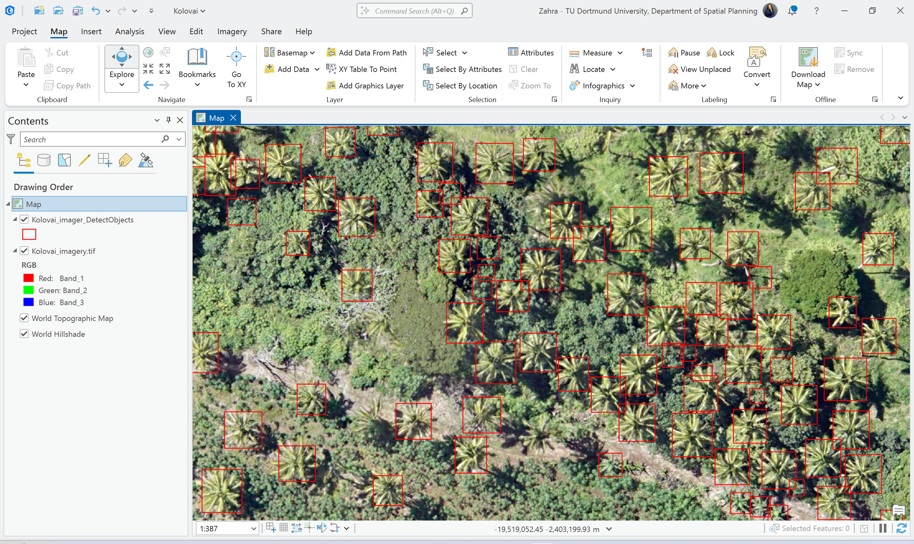

This project demonstrates object detection using a pretrained deep learning model in ArcGIS Pro. The goal is to automatically detect palm trees from high-resolution aerial imagery.
A pretrained object detection model provided by Esri was applied using the Detect Objects Using Deep Learning tool in ArcGIS Pro. The model scans the imagery using tiled inference and identifies palm trees based on learned spatial patterns.
Post-processing includes confidence filtering and Non-Maximum Suppression (NMS) to remove duplicate detections and retain the most reliable results.


